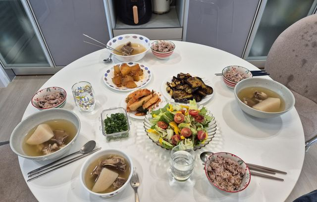

1959년 첫 제품은 자연에서 분해되는 농축 세제 'L.O.C.'였습니다. 환경을 생각하는 세제라는 말이 낯설던 시절부터, 지구와 가족을 함께 생각하는 제품을 만들어 왔어요. 지금의 암웨이 홈 세제는 미국 환경보호청(EPA)의 'Safer Choice' 기준을 충족한 인증을 받았습니다(일부 제품).
신뢰
미국 상공회의소 회장을 맡은 창업 가문
공동 창업자 제이 밴 앤델은 미국 상공회의소 회장을 지냈고(1979~80), 아들 스티브 밴 앤델도 뒤이어 회장을 맡았습니다(2001~02). 미국 경제계에서 인정받아 온 기업입니다.
재무
흔들림 없는 탄탄한 회사
주식시장이나 외부 투자자에 기대지 않고, 60년 넘게 두 창업 가문이 소유하고 이끌어 온 회사입니다. 단기 실적에 흔들리지 않고 길게 보고 투자할 수 있는 이유예요. 포브스 '미국 최대 비상장 기업' 순위에도 이름을 올렸습니다(2024년 76위).
상생
한국 사회와 함께 성장합니다
한국암웨이는 국내 중소기업과 제품을 함께 기획하고 암웨이의 글로벌 유통망으로 해외 진출을 돕는 '원포원 프로젝트'를 이어 오고 있습니다. 참여 기업의 76%가 10년 넘게 함께하고 있어요.
3 · 제품은 왜 다른가?
키우고, 연구하고, 책임집니다
원료를 직접 키우고, 연구에 아낌없이 투자하고, 써 보고 만족하지 않으면 돌려받을 수 있어요.
원료는 직접 키웁니다 · 뉴트리라이트 농장
미국 워싱턴주 트라우트 레이크 농장(약 886에이커)은 미국 최대의 유기농 인증 허브 농장이고, 멕시코와 브라질에서도 유기농 인증 농장을 운영합니다.
빙하수로 물을 줍니다애덤스산 빙하에서 흘러내린 강물로 밭에 물을 대요.
농약 대신 무당벌레와 매이로운 곤충과 훈련된 매가 해충과 새를 막아요.
땅은 퇴비와 지렁이가 살립니다유기농 퇴비와 지렁이가 흙을 건강하게 일궈요.
영상으로 보기 · SBS 「세가여」 '자연으로부터 얻는 농법, 그 방법은?' 유튜브에서 보기
1934년에 시작해 90년 넘게 식물 영양을 연구해 온, 건강기능식품·비타민 세계 판매 1위 브랜드 뉴트리라이트 · GlobalData 2024 글로벌 브랜드 시장점유율 기준
R&D
연구에 아낌없이 투자합니다
농장부터 연구소, 임상 연구까지 직접 챙기고, 세계 여러 대학·연구기관, 한국 바이오 기업과도 함께 연구합니다. 공중보건·안전 인증 기관인 NSF 인터내셔널과 30년 넘게 함께하며 외부 검증도 받아 왔어요.
800+명의 과학자·엔지니어75+곳의 연구소750+건의 특허(출원 포함)50만+건의 연간 품질 테스트
100%
만족 보증 제도
써 보고 만족하지 않으면 최대 3개월 안에 반품, 교환, 환불을 받을 수 있습니다. 법에 따른 청약철회도 물론 가능해요. 저희가 처음 제품을 써 볼 때도 이 제도 덕분에 부담이 없었습니다. 한국암웨이는 공정거래위원회가 인증하는 '소비자중심경영(CCM)' 인증 기업이기도 해요(2025~2027). 제품별 세부 조건은 공식 홈페이지에서 확인해 주세요.
우리 가족이 매일 쓰는 것들
건강식품 · 뉴트리라이트아침 식탁에서 온 가족이 함께 챙겨요. 아이들도 자기 몫을 먼저 찾을 만큼 익숙해졌어요.우리 집 하루 루틴일주일 치를 미리 나눠 담아 두면 바쁜 아침에도 잊지 않아요.

주방 · 쿡웨어다섯 식구 집밥을 매일 차려요. 좋은 도구 덕분에 요리 시간이 즐거워졌어요.아이들과 함께아이와 함께 쓰는 거라 더 꼼꼼히 골라요.
뉴트리라이트 건강기능식품아티스트리 스킨케어·화장품퀸 쿡웨어이스프링 정수기엣모스피어 공기청정기암웨이 홈 세제·생활용품글리스터 구강용품
S 그룹 80만 PV → 6% = 48,000원 본인 그룹 몫 36,000원을 빼면 12,000원
선착순 ✕ 노력순 ○
먼저 시작한 S보다, 나중에 시작해도 더 열심히 한 '본인'이 두 배를 받습니다. 가입 순서가 아니라 노력이 결과를 정해요.
수입의 역전
위 사람이 아래 사람보다 항상 많이 버는 피라미드와 다릅니다. 아래에서 시작해도 얼마든지 위를 앞설 수 있어요.
누구도 손해 보지 않습니다
후원수당은 회사가 각자에게 직접 지급합니다. 누군가의 몫을 떼어 다른 사람에게 주는 구조가 아니라서, 모두가 자기 몫을 온전히 받아요.
구조를 이해하기 위해 단순화한 예시이며(금액은 PV 기준으로 계산), 실제 수입이나 수입 보장이 아닙니다. 실제 후원수당은 BV 기준으로 계산되고, 비율과 자격 조건은 한국암웨이 비즈니스 매뉴얼을 따릅니다.
암웨이의 철학
더불어 사는 자본주의 Compassionate Capitalism · 공동 창업자 리치 디보스
리치 디보스는 같은 이름의 책(1993)에서 '사람들이 스스로 일어설 수 있도록 돕는 것'을 이야기했습니다. 혼자 이기는 경쟁보다 서로 돕는 협력으로, 자본이 없는 사람에게도 자기 사업의 기회를 나누자는 생각이에요. 저희가 이 일을 하는 이유도 여기에 있습니다. 함께하는 사람이 잘되도록 돕는 것이 결국 모두가 잘되는 길이라고 믿습니다.
전문가들은 이렇게 봅니다
앨빈 토플러
미래학자 · 『제3의 물결』(1980)
생산자(Producer)와 소비자(Consumer)의 경계가 무너진 '프로슈머(Prosumer)'의 시대를 이야기했습니다. 좋은 제품을 직접 써 보고, 그 경험을 나누며 유통의 한 부분이 되는 지금의 소비자가 바로 그 프로슈머라고 저희는 생각합니다.
로버트 기요사키
『부자 아빠 가난한 아빠』 저자
네트워크 마케팅을 '사람을 돕기 좋아하는 사람들을 위한 비즈니스 스쿨'로 소개하고, 적은 자본으로 사업 기술을 쌓는 방법으로 추천했습니다. 『The Business School for People Who Like Helping People』(2001)
폴 제인 필저
경제학자
앞으로 새로 생겨날 백만장자 중 상당수가 직접판매 분야에서 나올 것이라고 전망했습니다. 『The Next Millionaires』(2006)
워런 버핏
버크셔 해서웨이 회장
직접판매 방식으로 주방용품을 파는 회사 '팸퍼드 셰프(The Pampered Chef)'를 인수했습니다. 버크셔 해서웨이 인수 발표(2002)
전문가의 말을 그대로 옮긴 것이 아니라, 저서와 공개된 사실을 저희가 요약한 내용입니다.
가족과 함께, 다음 세대까지
부부가 함께
암웨이 사업은 가족을 중심으로 이루어집니다. 저희도 부부가 함께 배우고, 서로의 강점을 살려 같은 방향으로 걸어가고 있어요.
성장마다 인정과 배움
정해진 단계에 오를 때마다 인정과 교육, 세미나의 기회가 있고, 조건을 갖추면 가족과 함께하는 여행 기회도 주어집니다.
아이들에게 물려줄 수 있는
정년이 없는 사업이고, 일군 사업 기반은 자녀에게 이어질 수 있습니다. 무엇보다 사람을 돕는 삶의 태도를 세 아이에게 물려주고 싶어요.
단계별 자격 조건과 상속 기준은 한국암웨이 비즈니스 매뉴얼을 따릅니다.
5 · 걱정되는 것들
이런 게 궁금하셨죠?
다단계… 불법 아닌가요?
다단계판매는 「방문판매 등에 관한 법률」에 따라 공정거래위원회에 등록하고, 그 법을 지키며 운영하는 합법적인 판매 방식입니다. 문제가 되는 건 등록하지 않은 불법 피라미드 업체예요. 등록 여부와 후원수당 공개 정보는 공정거래위원회에서 누구나 확인할 수 있습니다.
가입하면 돈이 드나요?
저희가 아는 한 가입비는 없습니다. 제품을 필요한 만큼 회원 가격으로 사서 쓰시면 되고, 꼭 사야 하는 수량이나 금액도 없습니다.
물건을 많이 사거나 재고를 쌓아야 하나요?
아니요. 매장을 차리거나 재고를 쌓아 둘 필요가 없습니다. 주문하면 회사가 바로 배송해 줍니다. 저희도 집에서 필요한 만큼만 주문해서 씁니다. 누군가 무리한 구매를 권한다면 그건 올바른 방식이 아니에요.
파는 걸 못하는데 괜찮을까요?
저도 똑같은 걱정을 했습니다. 막상 해 보니 물건을 파는 일이라기보다, 내가 써 보고 좋았던 것을 가까운 사람에게 이야기하고 함께 배우는 일에 가까웠어요. 처음에는 앞서 해 본 분들께 배우면서 천천히 시작하시면 됩니다.
직장 다니면서 할 수 있나요?
저희도 그렇게 시작했습니다. 남편은 지금도 직장에 다니고 있고, 정해진 출근 시간이 없어서 퇴근 후나 주말처럼 각자 상황에 맞게 시간을 냅니다. 다만 시간을 쓴 만큼 결과가 나오는 일이라, 처음부터 큰 기대보다는 꾸준함이 중요해요.
돈은 얼마나 벌 수 있나요?
솔직하게 말씀드리면, 사람마다 정말 다릅니다. 들이는 시간과 노력에 따라 결과가 달라지고 아무것도 보장되지 않아요. 그래서 저희는 금액을 약속하지 않습니다.
공정하게 판단하실 수 있도록 실제 통계도 보여 드려요. 공정거래위원회 자료(2025년, 다단계 업계 전체)에 따르면 등록 판매원 중 후원수당을 한 번이라도 받은 사람은 15.9%이고, 하위 70% 판매원의 연평균 후원수당은 8.6만 원입니다. 대부분은 제품을 쓰려고 등록한 소비자이고, 사업으로 꾸준히 활동하는 소수가 수입을 만듭니다. 그래서 중요한 건 '얼마나 오래, 제대로 하느냐'라고 생각해요.
주변에서 걱정하는데요…
"다단계 아니야?", "사람 잃는 거 아니야?", "돈만 쓰고 끝나는 거 아니야?" 저희도 똑같이 들었어요. 걱정은 나를 아끼는 마음에서 나오는 거니까 당연합니다. 그래서 저희는 이 세 가지를 직접 확인했어요.
공정위에 등록되어 있고, 매출과 수당을 공개하는 회사인가?
가입비나 재고를 떠안기지 않는가?
제품을 내가 먼저 써 보고 만족했는가?
확인하고, 직접 써 보고, 그다음에 판단하셔도 늦지 않아요.
6 · 시작하기
먼저 써 보세요, 그다음은 자연스럽게
처음부터 사업을 결정할 필요는 없어요. 제품을 써 본 뒤의 길은 세 가지뿐입니다. 어느 쪽이든 손해 보는 길은 없어요.
사용해 보기궁금한 제품 하나부터
불만족
환불100% 만족 보증 · 최대 3개월
만족
나 혼자 사용
소비자 · 회원회원 혜택 받으며 계속 사용
나누어 사용(정보 전달)
✦ 부업가 · 사업가경험을 나누며 나만의 사업
시작하는 순서
편하게 물어보기
카카오톡이나 전화로 궁금한 점을 먼저 물어보세요. 부담 없이 이야기 나누는 자리예요.
설명 듣고 써 보기
만나거나 온라인으로 회사와 제품, 사업 방식을 설명해 드립니다. 직접 써 보고 판단하셔도 돼요.
공식 홈페이지에서 가입
가입은 한국암웨이 공식 홈페이지나 앱에서 본인 인증 후 진행합니다. 필요한 정보는 상담할 때 안내해 드려요.